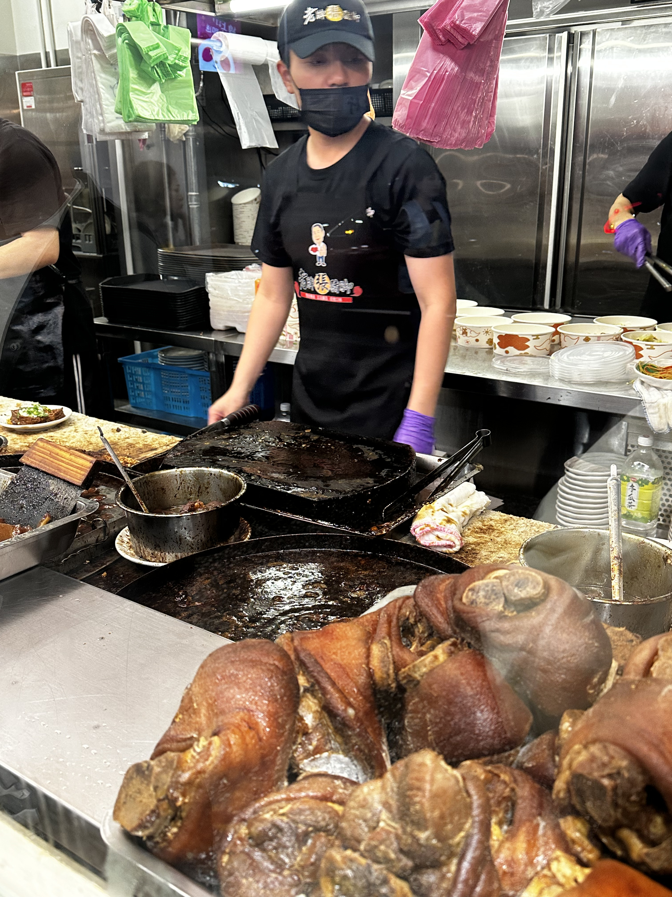

這次在延三夜市吃到的【老牌張豬腳飯】，剛到店門口就可以看到超級大滷桶，這家的滷汁都是用幾十年老滷汁，看起來很誘人。

我點的主食是腿庫飯，有特別請店員幫我切瘦一點的部位，結果真的非常驚艷。肉滷得很軟嫩，不用擔心會柴或咬不斷，滷汁香氣十足又很入味。飯上記得一定要加點老滷汁，整體味道會更豐富、更下飯，光是白飯我就多吃了好幾口。
小菜方面我們點了高麗菜和滷豆腐。高麗菜炒得軟中帶甜，吃起來清爽，是非常適合搭配滷肉的配角。而滷豆腐我真的超推，滷得恰到好處、口感不會過軟，沾上他們家自製辣椒醬，鹹香中帶點微辣，非常涮嘴。
不過要提醒的是，他們家的整體口味偏鹹，就連味噌湯也不例外，建議可以自備水或飲料搭配。整體來說，這是一家味道濃郁、有記憶點的好店，是我會想再回訪的經典台式豬腳飯。順帶一提，這家生意超級好，建議大家如果不想排太久，可以避開午餐和晚餐尖峰時段來。